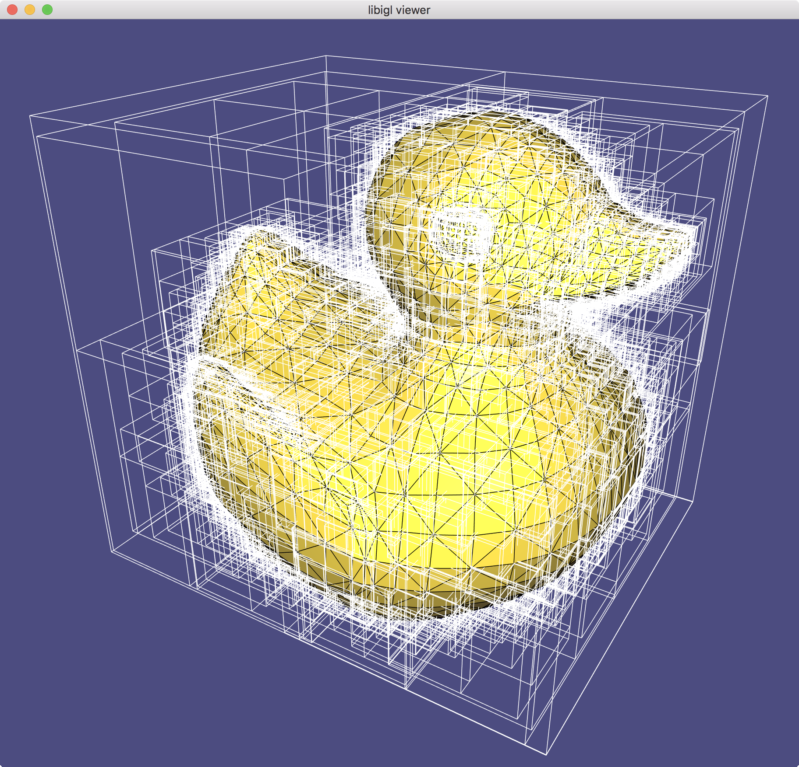
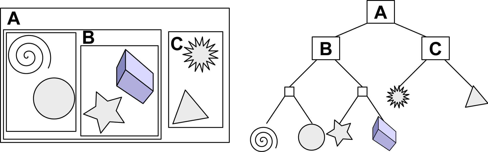
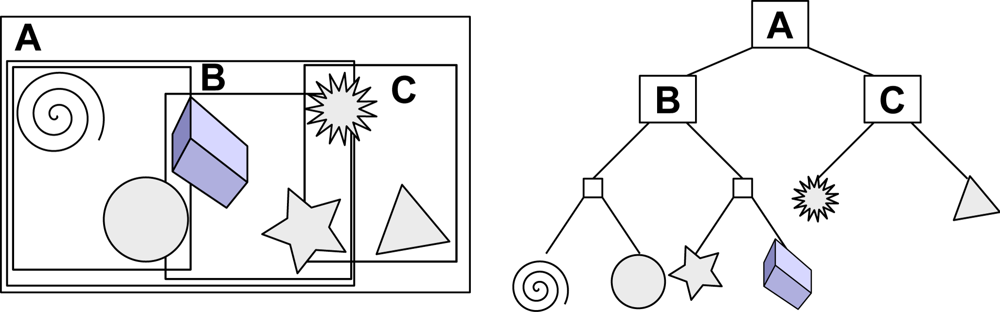
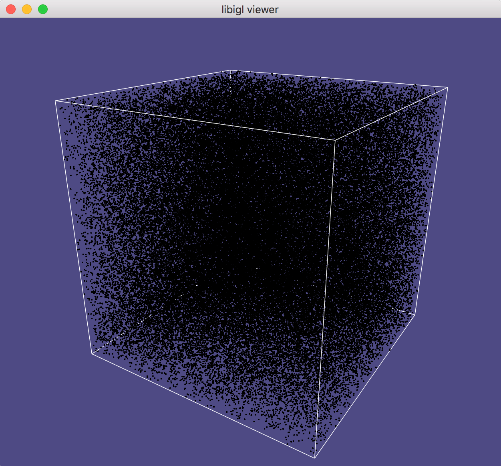
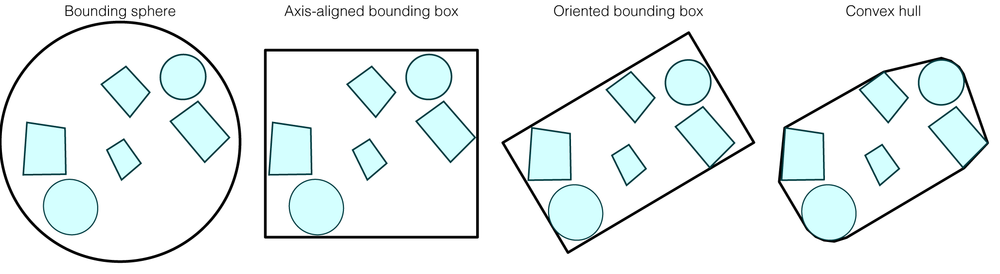
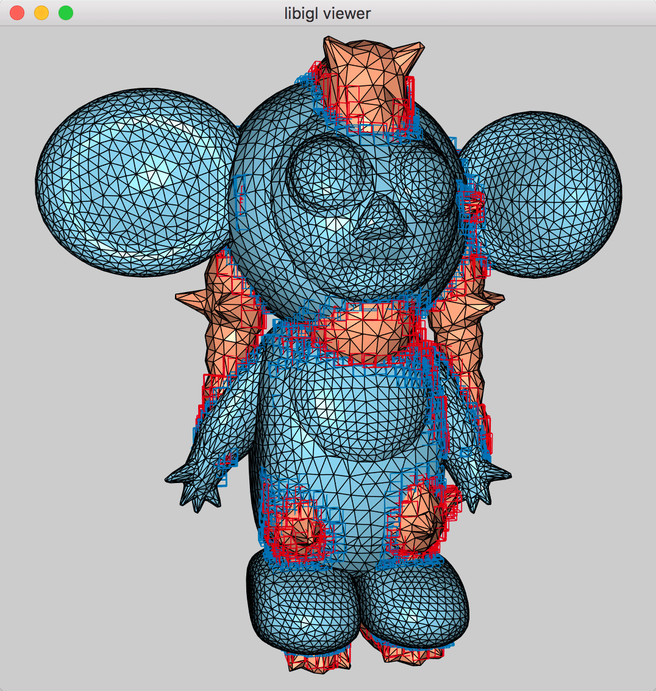

\(\newcommand{\A}{\mat{A}}\)
\(\newcommand{\B}{\mat{B}}\)
\(\newcommand{\C}{\mat{C}}\)
\(\newcommand{\D}{\mat{D}}\)
\(\newcommand{\E}{\mat{E}}\)
\(\newcommand{\F}{\mat{F}}\)
\(\newcommand{\G}{\mat{G}}\)
\(\newcommand{\H}{\mat{H}}\)
\(\newcommand{\I}{\mat{I}}\)
\(\newcommand{\J}{\mat{J}}\)
\(\newcommand{\K}{\mat{K}}\)
\(\newcommand{\L}{\mat{L}}\)
\(\newcommand{\M}{\mat{M}}\)
\(\newcommand{\N}{\mat{N}}\)
\(\newcommand{\One}{\mathbf{1}}\)
\(\newcommand{\P}{\mat{P}}\)
\(\newcommand{\Q}{\mat{Q}}\)
\(\newcommand{\Rot}{\mat{R}}\)
\(\newcommand{\R}{\mathbb{R}}\)
\(\newcommand{\S}{\mathcal{S}}\)
\(\newcommand{\T}{\mat{T}}\)
\(\newcommand{\U}{\mat{U}}\)
\(\newcommand{\V}{\mat{V}}\)
\(\newcommand{\W}{\mat{W}}\)
\(\newcommand{\X}{\mat{X}}\)
\(\newcommand{\Y}{\mat{Y}}\)
\(\newcommand{\argmax}{\mathop{\text{argmax}}}\)
\(\newcommand{\argmin}{\mathop{\text{argmin}}}\)
\(\newcommand{\a}{\vec{a}}\)
\(\newcommand{\b}{\vec{b}}\)
\(\newcommand{\c}{\vec{c}}\)
\(\newcommand{\d}{\vec{d}}\)
\(\newcommand{\e}{\vec{e}}\)
\(\newcommand{\f}{\vec{f}}\)
\(\newcommand{\g}{\vec{g}}\)
\(\newcommand{\mat}[1]{\mathbf{#1}}\)
\(\newcommand{\min}{\mathop{\text{min}}}\)
\(\newcommand{\m}{\vec{m}}\)
\(\newcommand{\n}{\vec{n}}\)
\(\newcommand{\p}{\vec{p}}\)
\(\newcommand{\q}{\vec{q}}\)
\(\newcommand{\r}{\vec{r}}\)
\(\newcommand{\transpose}{{\mathsf T}}\)
\(\newcommand{\tr}[1]{\mathop{\text{tr}}{\left(#1\right)}}\)
\(\newcommand{\s}{\vec{s}}\)
\(\newcommand{\t}{\vec{t}}\)
\(\newcommand{\u}{\vec{u}}\)
\(\newcommand{\vec}[1]{\mathbf{#1}}\)
\(\newcommand{\x}{\vec{x}}\)
\(\newcommand{\y}{\vec{y}}\)
\(\newcommand{\z}{\vec{z}}\)
\(\newcommand{\0}{\vec{0}}\)
\(\renewcommand{\v}{\vec{v}}\)
\(\renewcommand{\hat}[1]{\widehat{#1}}\)
Computer Graphics – Bounding Volume Hierarchy
To get started: Clone this repository
git clone --recursive http://github.com/[username]/computer-graphics-bounding-volume-hierarchy.git
Background
Read Section 12.3 of Fundamentals of Computer Graphics (4th Edition).

Visualize of all of the boxes of a hierarchical axis-aligned bounding-box tree
around the triangles of a rubber
ducky
mesh.
Object partitioning
In this assignment, you will build an Axis-Aligned Bounding-Box
Tree (AABB Tree). This is one of the simplest
instances of an object partitioning scheme, where a group of input objects are
arranged into a bounding volume
hierarchy.

In the “scene” on the left, there are six objects. All objects fit into the
axis-aligned bounding box A (the root of the tree), then we cluster nearby
objects into subtrees rooted at B and C. We continue to apply this
process recursively until leaves of the tree store a single object. Tree shown
on right. (image
source)
In our assignment, we will build a binary tree. Conducting queries on the tree
will be reminiscent of searching for values in a binary search
tree. However, objects in our
tree will not be perfectly sorted. In general, the bounding boxes of
“relatives” (even siblings) in our tree will overlap spatially.

In most cases, bounding boxes will overlap. The tree topology remains the same
in this case. (original image
source)
By allowing bounding boxes to overlap we avoid the need to geometric split our
objects.
Question: If we use overlapping bounding boxes (i.e., no splitting) to
build an AABB Tree , how many leaves will there be?

The AABB Tree around a point cloud starts with a single box. The next level
has two boxes, roughly splitting the first box. This process continues
recursively until there’s only a single point in the
box.
In contrast, space partitioning schemes (e.g., kd
trees or
octrees) divide space perfectly at
each level of the tree, with no overlapping. This makes query code easy to
write, but necessitates splitting of objects that inevitably straddle partition
boundaries.
Question: Which is better for an unstructured set of points, space partitioning or
object partitioning?
Hint: No perfect answer, but consider: do you ever need to split a point?
Bounding primitives
In this assignment, we will use axis-aligned bounding boxes (AABBs) to enclose
groups of objects (e.g., points, triangles, other bounding boxes). In general,
AABBs will not tightly enclose a set of objects. However, operations (e.g.,
growing the bounding box, testing ray-intersection or determining closest-point
distances with an axis-aligned bounding box) usually reduce to trivial
per-component arithmetic. This means the code is simple to write/debug and also
inexpensive to evaluate.

Minimal axis-aligned bounding boxes provide a good trade-off between
tightness, ease of construction and ease of query
evaluation.
Ray-intersection queries
See Section 12.3 of Fundamentals of Computer Graphics (4th Edition).
Distance queries
The recursive algorithm in Fundamentals of Computer Graphics (4th Edition) for
ray-AABBTree-intersection is essentially performing a depth first
search. The search usually
doesn’t have to visit the entire tree because most boxes are not hit by the
given ray. In this way, many search paths are quickly aborted.
On the other hand, using this style of depth-first search for closest point
queries can be a disaster. Every box has some closest point to our query. A
naive depth-first search could end up searching over every box before finding
the one with the smallest query.
Are we just talking about worst-case complexity for pathological arrangements
(e.g., a bunch of overlapping triangles piled at the origin)? No. Even on a
well-balanced, minimally overlapping AABB tree we could end up exploring most of
the leaves before finally finding the leaf containing the true closest point at
the very end.
This implies that we can’t just explore the left or right subtrees (or their
progeny) in arbitrary order. A quick fix is to peek at the closet distance to
the boxes containing the left and right trees respectively and prefer our depth
first search in the closest direction. This helps, but we still end up
drilling down to leaves when there are potentially entire large subtrees that
are closer. The problem is that depth first search is inherently
stack-based and we
really want to use a priority
queue to explore the current best
looking path in our tree wherever it might be.
Question: Hey! Where’s the stack in depth first search? I implemented it
using recursion, there’s no #include <stack> in my code!
Hint: Where are the instructions and data of your program stored?
Breadth-first search is a
much better structure for distance queries on a spatial acceleration
data-structure. Pseudo-code for a closest distance algorithm might look like:
// initialize a queue prioritized by minimum distance
d_r ← distance to root's box
Q.insert(d_r, root)
// initialize minimum distance seen so far
d ← ∞
while Q not empty
// d_s: distance from query to subtree's bounding box
(d_s, subtree) ← Q.pop
if d_s < d
if subtree is a leaf
d ← min[ d , distance from query to leaf object ]
else
d_l ← distance to left's box
Q.insert(d_l ,subtree.left)
d_r ← distance to right's box
Q.insert(d_r ,subtree.right)
Question: If I have just a single query to conduct on a set of \(n\)
objects, is it worth it to use a BVH?
Hint: What is the complexity of building a BVH? What is the complexity
of a single brute force query?
Intersection queries between two trees
Suppose we want to find all pairs of intersecting triangles between two
meshes. One approach would be to put one mesh’s triangles in an AABB tree, then
loop over the other mesh’s triangles using the tree to accelerate intersection
tests. This works well if the mesh in the tree has many more triangles than the
other mesh, but can we do better if both mesh have many triangles? How about
putting both meshes in a AABB trees. If the root bounding boxes don’t overlap we
find out instantaneously that there are no pairs of intersecting triangles. If
they do overlap, we check their childrens’ boxes against each other. Anytime two
boxes don’t overlap we save many expensive pairwise triangle checks. A rough
sketch of this algorithm using a simple (i.e., non prioritized) queue is like
this:
// initialize list of candidate leaf pairs
leaf_pairs ← {}
if root_A.box intersects root_B.box
Q.insert( root_A, root_B )
while Q not empty
{nodeA,nodeB} ← Q.pop
if nodeA and nodeB are leaves
leaf_pairs.insert( node_A, node_B )
else if node_A is a leaf
if node_A.box intersects node_B.left.box
Q.insert( node_A, node_B.left )
if node_A.box intersects node_B.right.box
Q.insert( node_A, node_B.right )
else if node_B is a leaf
if node_A.left.box intersects node_B.box
Q.insert( node_A.left, node_B)
if node_A.right.box intersects node_B.box
Q.insert( node_A.right, node_B)
else
if node_A.left.box intersects node_B.left.box
Q.insert( node_A.left, node_B.left )
if node_A.left.box intersects node_B.right.box
Q.insert( node_A.left, node_B.right )
if node_A.right.box intersects node_B.right.box
Q.insert( node_A.right, node_B.right )
if node_A.right.box intersects node_B.left.box
Q.insert( node_A.right, node_B.left )
Careful, this sketch only considers a perfectly filled tree where nodes (and
their left/right children) are never null pointers. Your trees may
vary.
This broad phase identifies a set of overlapping bounding boxes containing
one triangle each. The broad phase is quick because it uses the bounding volume
hierarchy for acceleration and intersection between bounding boxes is a simple
and fast. The list of candidate pairs scales with the number of actual
intersections rather than the number of input triangles (as brute force
double-for loops does). This list can then be processed using the (expensive)
triangle-triangle intersection test in a narrow phase.

Using an AABB Tree for each shape (light red and light blue triangle meshes),
we identify a set of candidate intersecting bounding boxes (red and blue).
Question: Suppose we want to detect intersections for a simulation of two
deforming meshes (e.g., elastic solids bumping into each other). Can we reuse
our AABB Tree even if the meshes are deforming? What if they’re just moving
rigidly (rotations and translations)?
Hint: Is an axis-aligned box still axis-aligned if it’s rotated 45°?
Timing
Never conduct performance evaluations in debug mode. To set up a “release” mode
version of your project use:
mkdir build_release
cd build_release
cmake -DCMAKE_BUILD_TYPE=Release ..
make
In this assignment, we’re aiming to improve the asymptotic complexity for the
average case. We will
not formalize the probability
distribution of inputs,
but instead consider uniformly random point
clouds or real-world surface models.
The AABB Tree algorithms should behave like \(O(\log{n})\) compared to brute
force \(O(n)\) algorithms. For large inputs the difference should be striking.
Tasks
Whitelist
This assignment uses smart
pointers. In particular,
std::shared_ptr. For
the most part you can use these like regular “raw”
pointers. But
for initialization use:
// Instead of:
// MyClass * A = new MyClass();
// Use
std::shared_ptr<MyClass> A = std::make_shared<MyClass>();
And omit deletion lines:
// No need for:
// delete A;
// Instead, it's destroyed when the last shared_ptr to A is destroyed
You’re encouraged to use the following
std::numeric_limits<double>::infinity() and
-std::numeric_limits<double>::infinity() in #include <limits> are often
useful for initializing values before calculating a running minimum or
maximum respectively.std::priority_queuestd::list useful as a simple (non-priority) queuestd::pair often useful to store key-value pairs (e.g., a priority and its
corresponding object)
Blacklist
Do not use or look at any of the following functions. Work out geometric
derivations by hand rather than googling for a solution. Always cite online
references as per academic honesty policies.
Eigen::AlignedBoxigl::AABBigl::ray_box_intersectigl::ray_mesh_intersectigl::ray_mesh_intersectigl::point_simplex_squared_distance.cpp
src/ray_intersect_triangle.cpp
Intersect a ray with a triangle (feel free to
crib your solution from the ray
casting).
src/ray_intersect_triangle_mesh_brute_force.cpp
Shoot a ray at a triangle mesh with \(n\) faces and record the closest hit. Use
a brute force loop over all triangles, aim for \(O(n)\) complexity but focus on
correctness. This will be your reference solution.
src/ray_intersect_box.cpp
Intersect a ray with a solid box (careful: if the ray or min_t lands
inside the box this could still hit something stored inside the box, so this
counts as a hit).
src/insert_box_into_box.cpp
Grow a box B by inserting a box A.
src/insert_triangle_into_box.cpp
Grow a box B by inserting a triangle with corners a, b, and c.
AABBTree::AABBTree in src/AABBTree.cpp
Construct an axis-aligned bounding box tree given a list of objects. Use the
midpoint along the longest axis of the box containing the given objects to
determine the left-right split.
AABBTree::ray_intersect in src/AABBTree.cpp
Determine whether and how a ray intersects the contents of an AABB tree. The
method should perform in \(O(\log{n})\) time for a tree containing \(n\)
(reasonably distributed) objects.
If you run ./rays you should see something like:
# Ray Triangle Mesh Intersection
|V| 334
|F| 668
Firing 100 rays...
| Method | Time in seconds |
|:------------|----------------:|
| brute force | 0.00158905983 |
| build tree | 0.00064301491 |
| use tree | 0.00004386902 |
If your method is incorrect, you will see some lines like this:
...
Error: #bf_hit(38) (1) != #tree_hit(38) (0)
...
This example line means that your brute force algorithm thinks ray 38 hits your
object but your tree algorithm is not finding it.
src/nearest_neighbor_brute_force.cpp
Compute the nearest neighbor for a query in the set of \(n\) points (rows of
points). This should be a slow reference implementation. Aim for a
computational complexity of \(O(n)\) but focus on correctness.
src/point_box_squared_distance.cpp
Compute the squared distance between a query point and a box
src/point_AABBTree_squared_distance.cpp
Compute the distrance from a query point to the objects stored in a AABBTree
using a priority queue. Note: this function is not meant to be called
recursively.
Running ./distances you should also see something like this:
# Point Cloud Distance Queries
|points|: 100000
|querires|: 10000
| Method | Time in seconds |
|:------------|----------------:|
| brute force | 1.50723695755 |
| build tree | 0.14633584023 |
| use tree | 0.05846095085 |
src/point_triangle_squared_distance.cpp
Compute the squared distance of a query point to a triangle, output the closest
point on the triangle in barycentric coordinates.
src/triangle_triangle_intersection.cpp
Determine whether two triangles intersect.
src/box_box_intersect.cpp
Determine if two bounding boxes intersect
src/find_all_intersecting_pairs_using_AABBTrees.cpp
Find all intersecting pairs of leaf boxes between one AABB tree and another
Running ./intersections will also produce something like this:
# Triangle Mesh Intersection Detection
|VA| 2002
|FA| 4000
|VB| 6669
|FB| 13334
| Method | Time in seconds |
|:------------|----------------:|
| brute force | 1.55577802658 |
| build trees | 0.01804995537 |
| use trees | 0.00816702843 |
If your method is incorrect, you will see some lines like this:
...
Error: Intersecting pairs found using tree but not brute force:
7,722
...
This indicates that your tree is finding more intersecting triangles than your
brute force method. In particular, the tree thinks the \(7\)-th triangle of mesh A
is intersecting the \(772\)-th triangle of mesh B.